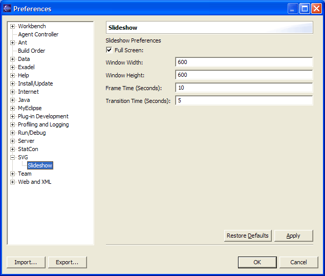

SVG Slideshow
A slideshow with SVG images can be run by first selecting multiple files and
then executing the 'SVG / Slideshow' menu item in the context popup menu of the Navigator
view. The settings for the slideshow can be found in the 'Preferences' window under the
SVG category.
